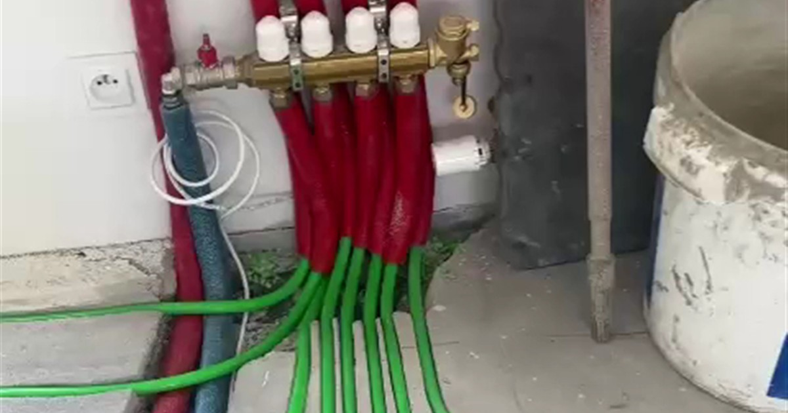

Zapowietrzona instalacja
Objawy są charakterystyczne: część pętli jest ciepła tylko przy rozdzielaczu, w rurach słychać bulgotanie, a pomieszczenia grzeją nierówno mimo tych samych nastaw. Powietrze w obiegu blokuje przepływ i woda po prostu nie dociera dalej.
Rozwiązaniem jest odpowietrzenie instalacji przez odpowietrzniki na rozdzielaczu, pętla po pętli. To czynność serwisowa, którą wykonuje się po napełnieniu instalacji i czasem trzeba powtórzyć po pierwszym sezonie.
Źle wyregulowane przepływy
Rozdzielacz ma na belce rotametry, czyli przepływomierze, którymi ustawia się ilość wody płynącej przez każdą pętlę. Jeżeli wszystkie są otwarte na maksimum, woda pójdzie najkrótszą pętlą, a najdłuższa dostanie tyle, co nic.
Efekt widać jako pokój, który zawsze jest chłodniejszy od pozostałych, mimo że termostat pokazuje to samo. Regulacja rotametrów to standardowy element uruchomienia instalacji, a nie dodatkowa usługa.
Za gruba warstwa na podłodze
Najczęstszy powód, dla którego dobrze wykonana instalacja grzeje słabo. Gruby podkład pod panele, dywan na całej powierzchni albo deska lita o dużej grubości działają jak izolacja i odcinają ciepło.
Suma oporu cieplnego wszystkich warstw nad rurą nie powinna przekraczać około 0,15 m²K/W. Jeżeli w pokoju z podłogówką leży wykładzina dywanowa, żadna regulacja tego nie naprawi.
Za mała powierzchnia grzewcza
Podłoga oddaje ciepło tylko tam, gdzie jest wolna. Zabudowa kuchenna, szafy w zabudowie i duże meble stojące na podłodze wyłączają swoją powierzchnię z ogrzewania. W małym, mocno zastawionym pomieszczeniu potrafi to być połowa metrażu.
Dlatego przy projekcie pytamy o układ mebli. W takich pomieszczeniach zagęszczamy rozstaw rur w wolnej części, zamiast rozkładać je równomiernie po całości.
Zbyt niska temperatura zasilania albo źle ustawiona krzywa
Jeżeli wszystkie pomieszczenia grzeją równo, ale za słabo przy mrozie, problem jest w źródle ciepła, a nie w instalacji podłogowej. Zwykle chodzi o za płaską krzywą grzewczą albo mieszacz ustawiony zbyt nisko.
To najprostsza do naprawienia przyczyna, bo wymaga zmiany nastawy, a nie ingerencji w podłogę.
Nieszczelność
Objawy: spadające ciśnienie w instalacji, konieczność częstego dopuszczania wody, wilgotna plama na posadzce albo ciepły ślad w jednym miejscu podłogi. To sytuacja, w której trzeba wezwać serwis, a nie eksperymentować z nastawami.
Przy odbiorze instalacji wykonujemy próbę szczelności i przekazujemy dokumentację przebiegu rur. Dzięki niej ewentualna lokalizacja usterki nie oznacza rozkuwania podłogi na oślep.
Najczęstsze pytania
Podłoga jest ciepła tylko przy rozdzielaczu. Co to znaczy?
Najczęściej zapowietrzenie pętli albo zamknięty przepływ na rotametrze. Zaczyna się od odpowietrzenia instalacji, a potem sprawdza ustawienia przepływów na belce rozdzielacza.
Jeden pokój jest zawsze chłodniejszy. Dlaczego?
Zwykle przez nierówno rozdzielony przepływ albo dłuższą pętlę, która dostaje tyle samo wody co krótsza. Drugą częstą przyczyną jest większa strata ciepła w tym pomieszczeniu, na przykład narożnik z dwoma ścianami zewnętrznymi.
Czy dywan zepsuje ogrzewanie podłogowe?
Nie zepsuje, ale skutecznie odetnie ciepło na swojej powierzchni. Mały dywan przy łóżku nie robi różnicy, wykładzina na całym pokoju owszem.
Jak sprawdzić, czy instalacja jest szczelna?
Po napełnieniu wykonuje się próbę ciśnieniową i obserwuje, czy ciśnienie utrzymuje się w czasie. Robimy to standardowo przed przekazaniem instalacji, razem z dokumentacją przebiegu rur.